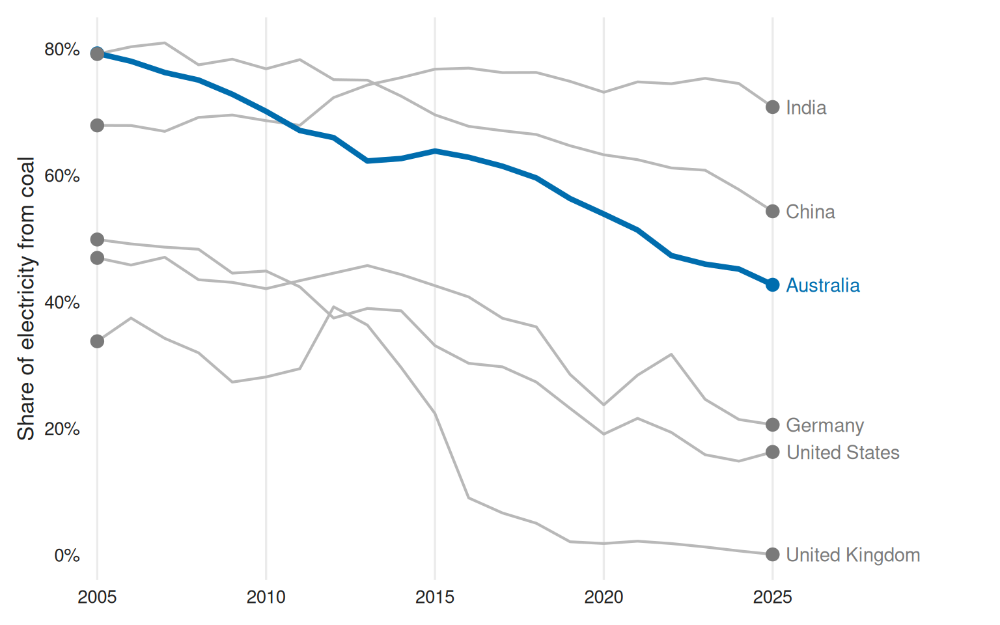
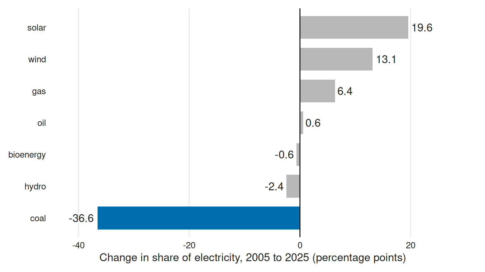

# install.packages("remotes")
remotes::install_github("ETC5523-2026/etc5523-assignment-4-tambatsmit")This guide is for an energy policy analyst preparing a briefing on a country’s electricity transition. It shows how to install powershift, launch and use its app, and read the results to answer one question:
How much has the share of a country’s electricity from one source changed between two years, and was that faster or slower than in other countries?
Shares and percentage points
A source’s share is the percentage of a country’s electricity generated from it in a year. The change between two years is measured in percentage points: the end-year share minus the start-year share. If coal’s share falls from 79% to 43%, that is a fall of 36 points. Because the shares of all sources add up to 100% each year, a fall in one source is matched by rises in others.
Install the package
Launch the app
The app uses the electricity_mix data included in the package, so it needs no other files.
Use the app
Work down the sidebar:
- Country to focus on: The country you are briefing on. It is drawn in blue and summarised in the three boxes.
- Countries to compare with: The countries to set it against, drawn in grey. Click in the box and type a name to add a country; click a name and press Delete to remove it.
- Source of electricity: The source whose share you want to follow, such as coal or solar.
- Years to compare: Drag either end of the slider to set the start and end years.
The page then shows:
- Three boxes: The focus country’s share in the end year, its change in percentage points, and how many of the countries shown have data for both years.
- Compare countries tab: A headline answering the question for the focus country, a sentence giving the range of changes across the countries shown, and a chart of each country’s share over the years chosen.
- Whole mix tab: The change in every source’s share for the focus country, which shows what replaced what.
- Table tab: Each country’s share in both years, the change, the change per year and the result in words.
- Guide tab: What each control and field means, and the limitations.
Read the outputs
The app’s first view follows coal in Australia from 2005 to 2025, compared with the United Kingdom, Germany, the United States, China and India. share_change() produces the same numbers:
countries <- c(
"Australia", "United Kingdom", "Germany", "United States", "China", "India"
)
changes <- share_change(electricity_mix, from = 2005, to = 2025)
coal <- changes |>
filter(source == "coal", country %in% countries) |>
arrange(change)
coal |>
select(country, from_share, to_share, change, change_per_year)
#> # A tibble: 6 × 5
#> country from_share to_share change change_per_year
#> <chr> <dbl> <dbl> <dbl> <dbl>
#> 1 Australia 79.3 42.7 -36.6 -1.83
#> 2 United Kingdom 33.8 0.113 -33.7 -1.68
#> 3 United States 49.9 16.3 -33.6 -1.68
#> 4 Germany 47.0 20.6 -26.4 -1.32
#> 5 China 79.2 54.3 -24.9 -1.24
#> 6 India 67.9 70.8 2.90 0.145Coal’s share of Australia’s electricity fell by 36.6 points, the largest fall of these countries, but in 2025 coal still supplied 42.7% of its electricity. The United Kingdom’s share fell by a similar amount from a lower start, to almost nothing, and India’s share rose. The result column is the text the app shows in its headline and table:
coal$result[coal$country == "Australia"]
#> [1] "got 42.7% of its electricity from coal in 2025, down from 79.3% in 2005"The app’s chart shows the same comparison:
plot_data <- electricity_mix |>
filter(
source == "coal",
country %in% countries,
between(year, 2005, 2025)
) |>
mutate(focus = if_else(country == "Australia", "Focus", "Context"))
endpoints <- plot_data |>
group_by(country) |>
slice_max(year, n = 1, with_ties = FALSE) |>
ungroup()
ends <- plot_data |>
filter(year %in% c(2005, 2025))
ggplot(plot_data, aes(year, share, group = country)) +
geom_line(colour = brand[["muted"]], linewidth = 0.75) +
geom_line(
data = filter(plot_data, focus == "Focus"),
colour = brand[["accent"]],
linewidth = 1.5
) +
geom_point(data = ends, aes(colour = focus), size = 3) +
ggrepel::geom_text_repel(
data = endpoints,
aes(label = country, colour = focus),
direction = "y",
hjust = 0,
nudge_x = 0.4,
segment.colour = NA,
seed = 5523
) +
scale_colour_manual(values = line_colours, guide = "none") +
scale_x_continuous(
breaks = scales::breaks_width(5),
expand = expansion(mult = c(0.01, 0.22))
) +
scale_y_continuous(labels = scales::label_percent(scale = 1)) +
coord_cartesian(clip = "off") +
labs(x = NULL, y = "Share of electricity from coal") +
theme_cwd(base_size = 13)
How to read it:
- Each line is one country. The dots mark the start and end years.
- The vertical gap between a country’s two dots is its change in percentage points. A steeper line means faster change.
- The focus country is blue; the countries it is compared with are grey.
What replaced coal
The Whole mix tab uses the same function to show the change in every source for the focus country:
mix <- changes |>
filter(country == "Australia", !is.na(change)) |>
arrange(change) |>
mutate(
source = factor(source, levels = source),
focus = if_else(source == "coal", "Focus", "Context")
)
ggplot(mix, aes(change, source, fill = focus)) +
geom_col(width = 0.72) +
geom_vline(xintercept = 0, colour = brand[["ink"]]) +
geom_text(
aes(
label = round(change, 1),
hjust = if_else(change < 0, 1.15, -0.15)
),
colour = brand[["ink"]]
) +
scale_fill_manual(values = focus_colours, guide = "none") +
scale_x_continuous(expand = expansion(mult = 0.15)) +
coord_cartesian(clip = "off") +
labs(
x = "Change in share of electricity, 2005 to 2025 (percentage points)",
y = NULL
) +
theme_cwd(base_size = 13)
Solar (19.6 points) and wind (13.1 points) together made up most of coal’s fall, with gas filling some of the rest.
When a change cannot be measured
Some countries have no change for a source, and the app says why:
changes |>
filter(
country %in% c("Indonesia", "Australia"),
source %in% c("coal", "nuclear"),
is.na(change)
) |>
select(country, source, result)
#> # A tibble: 3 × 3
#> country source result
#> <chr> <fct> <chr>
#> 1 Australia nuclear has no nuclear data after 2024
#> 2 Indonesia coal has no coal data after 2024
#> 3 Indonesia nuclear has no nuclear data after 2024- No data for a year: Indonesia’s figures end in 2024, so the app reports “No data” and asks you to move the slider to years with data. Australia’s nuclear figures also end in 2024; they are zero in every year reported.
- No data at all: Some countries never report a source. Australia has no “other renewables” figures, so the app asks you to choose another source or country.
- The same start and end year: The app asks you to choose two different years.
If no comparison countries are chosen, or none of them has data for both years, the app asks you to add countries or choose other years.
Limitations
Shares are not amounts. A falling share can hide rising use, because the share also depends on how much electricity a country generates in total. The generation column shows the amount, in terawatt-hours (TWh):
China’s coal share fell, but its electricity from coal rose from 1,980 TWh to 5,752 TWh, almost three times as much.
Electricity is only part of energy. Cars, heating and industry also burn fossil fuels directly, and they are not counted here.
Coverage varies. Only about 80 of the 213 countries have data before 2000, and the 2025 figures are early estimates for about 90 countries, which may be revised.
Data source
Our World in Data energy dataset, https://github.com/owid/energy-data, based on Ember’s Yearly Electricity Data and the Energy Institute’s Statistical Review of World Energy, licensed under CC BY 4.0. data-raw/electricity_mix.R prepares the data, and ?electricity_mix describes every column.